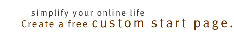

Web. With MSN's Custom Start Page
stock quotes, sports scores, news, weather,
comics, movies, music, Web sites, and lots
more are just a click away.
Start your travel here—with Microsoft Expedia travel services! Try Microsoft Investor—the easiest way to follow your investments. Visit our sponsors. See Slate for an original take on politics and culture. Go to Baseball Postseason Extra for game reports, analysis, and commentary on the playoffs and World Series. Sneak a peek at the new msn.com beta!